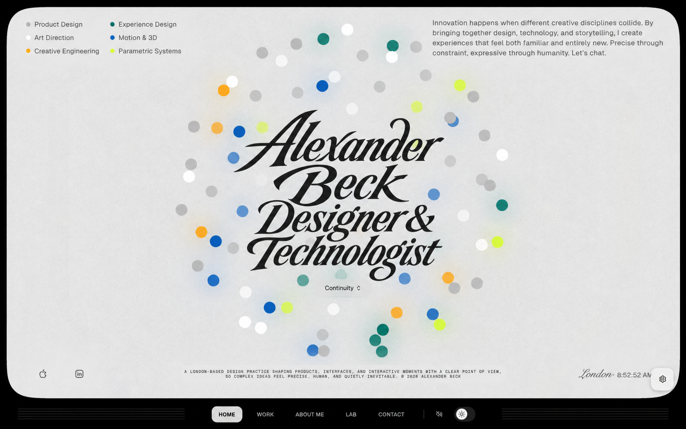
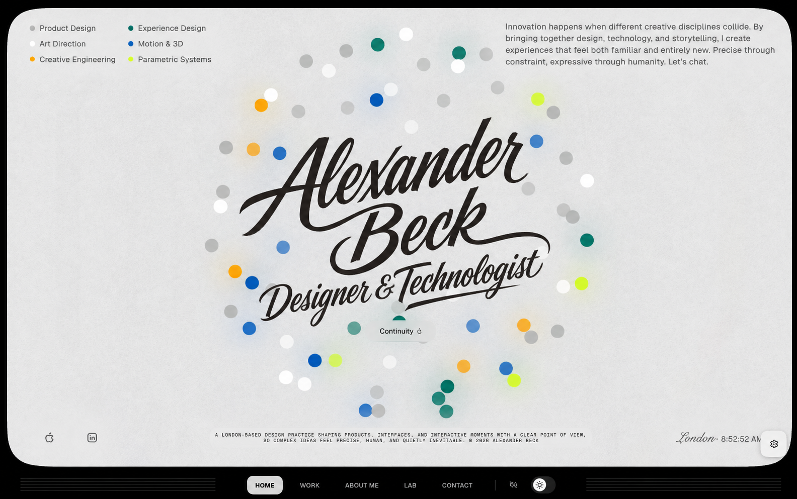
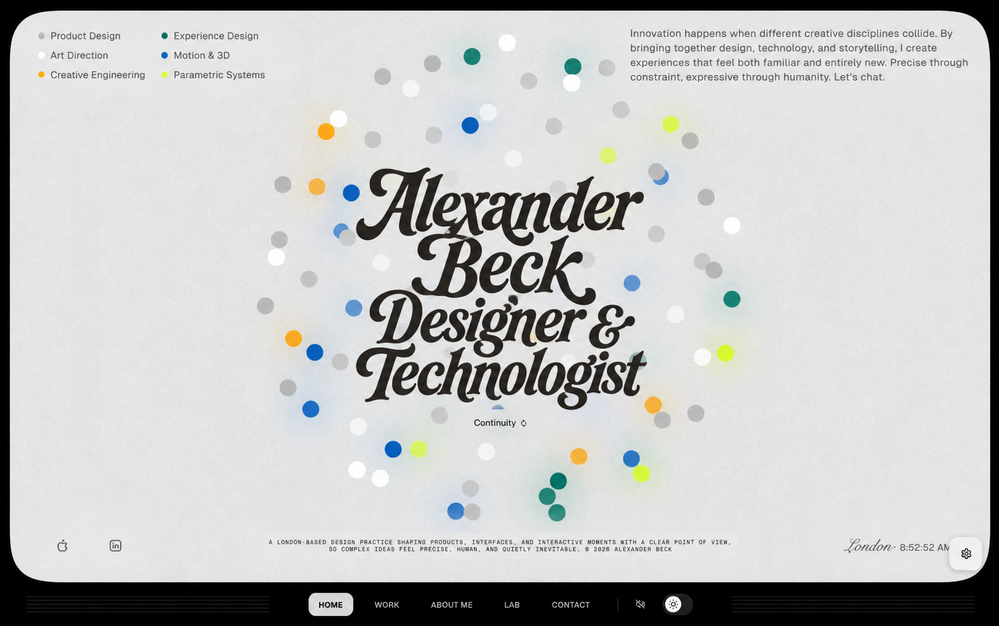
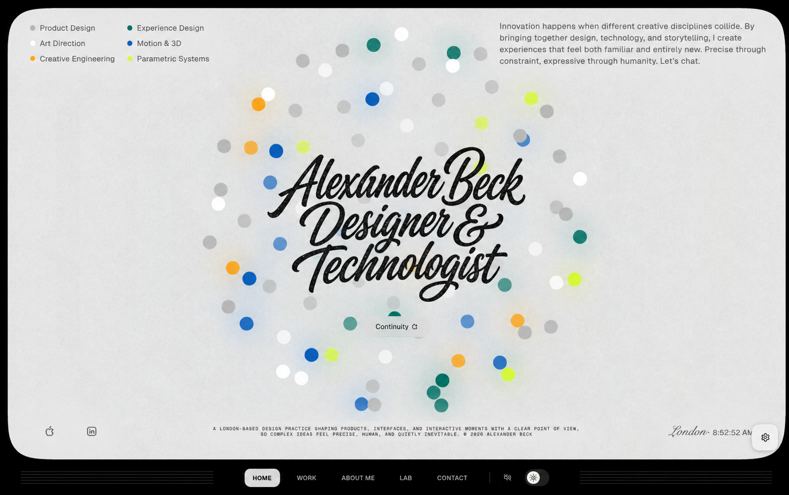
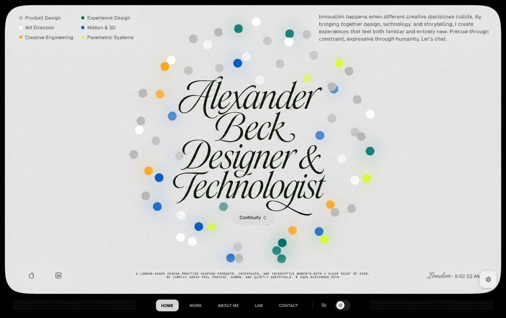
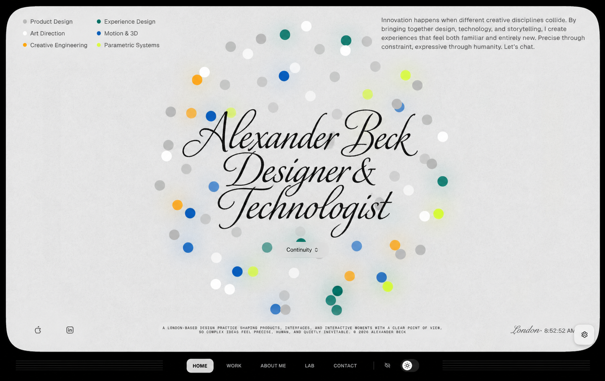
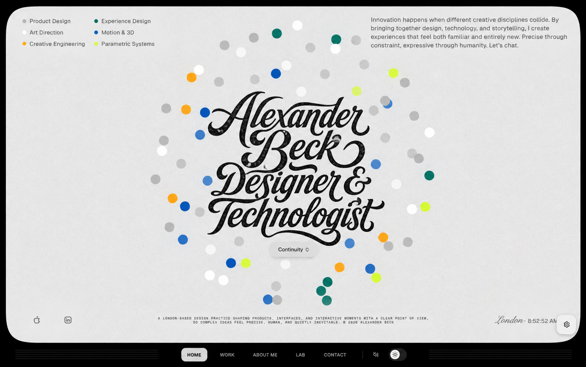
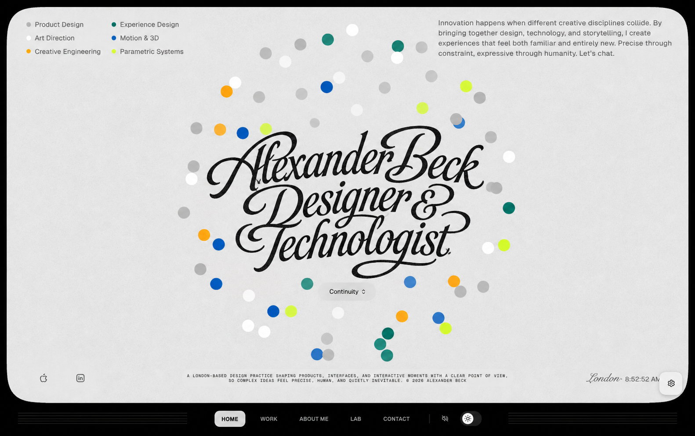

Script title studies
Eight hand-lettered homepage lockups. Four systems, each tested as a balanced and a more expressive composition.
01 — Sign-painter italic


02 — Seventies editorial brush


03 — Contemporary chancery


04 — Interlocking script signet

